阿尔代什：拥有太多美景和美食的烦恼
法国旅游发展署 ·

尊嘟假嘟？你还没去过阿尔代什？
峡谷、岩洞、石林、城堡，古城……
一抓一大把的美景；
板栗、奶酪、牛肉……吃也吃不完的美食；
今天打算给大伙来份《阿尔代什美景启示录》
附赠诱人美味特产，逛吃逛吃就来阿尔代什！
Ardèche
阿尔代什美景启示录
法国最优美的弧线
阿尔代什峡谷
Gorges de l'Ardèche
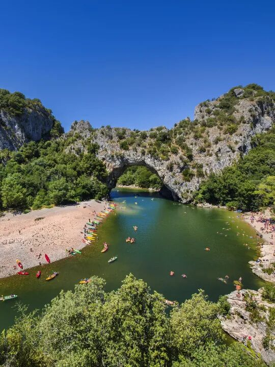
©iStock-RolfSt
从瓦隆蓬达尔克 (Vallon-Pont-d'Arc) 向东直到圣马丁-阿尔代什 (Saint-Martin-d'Ardèche)，这道绵延曲折40公里的深邃大裂痕被誉为“法国最优美的弧线”。
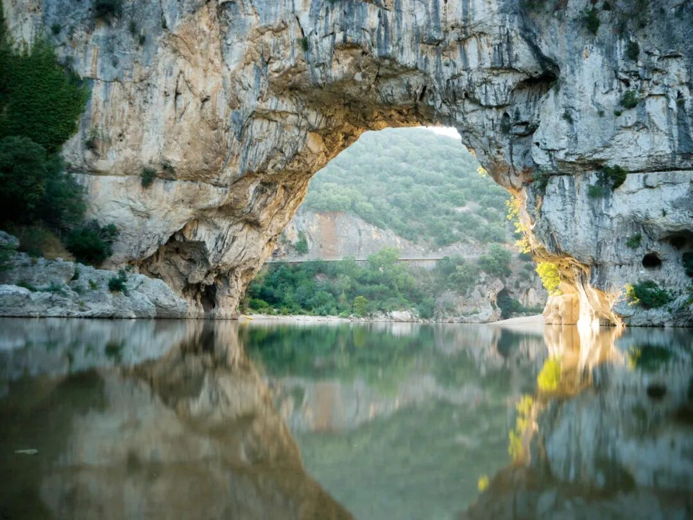
©iStock-frederikloewer
峡谷的入口由一座54米高的巨大岩石拱桥 (Pont-d'Arc) 把守，历经上千年漫长的自然雕琢，在崇山峻岭之中美得惊天动地。
皮划艇、漂流，攀岩或者露营
这片浑然天成的秘境
也是众多户外探险爱好者们的天堂
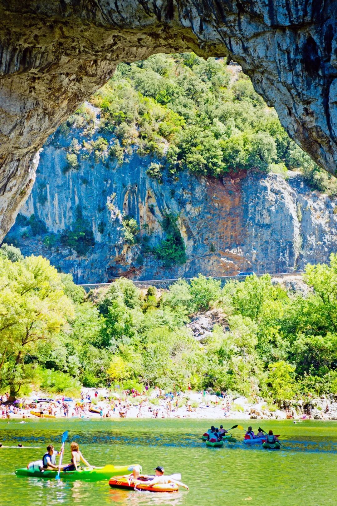
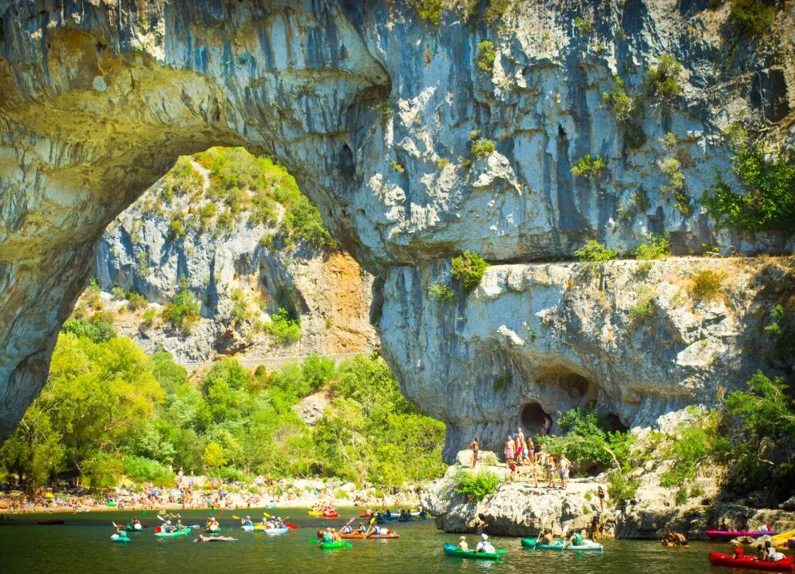
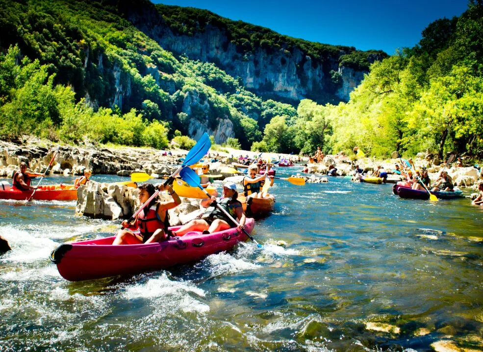
©iStock-Alphotographic
阿尔代什峡谷自然保护区
Réserve Naturelle Gorges de l'Ardèche
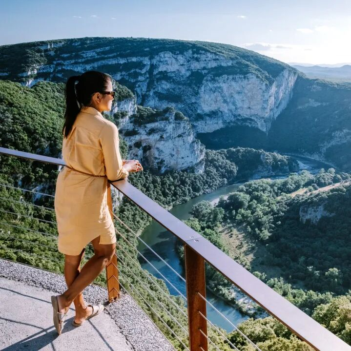
©iStock-fokkebok
大峡谷周围1575公顷的自然保护区大部分被橡木林和灌木丛覆盖着，原生态的地理环境成为了许多野生动物的栖息地，如啄木鸟、橡树鸦和大羯羊都喜欢在此安家。
人类第一个伟大杰作
肖维岩洞
Grotte Chauvet
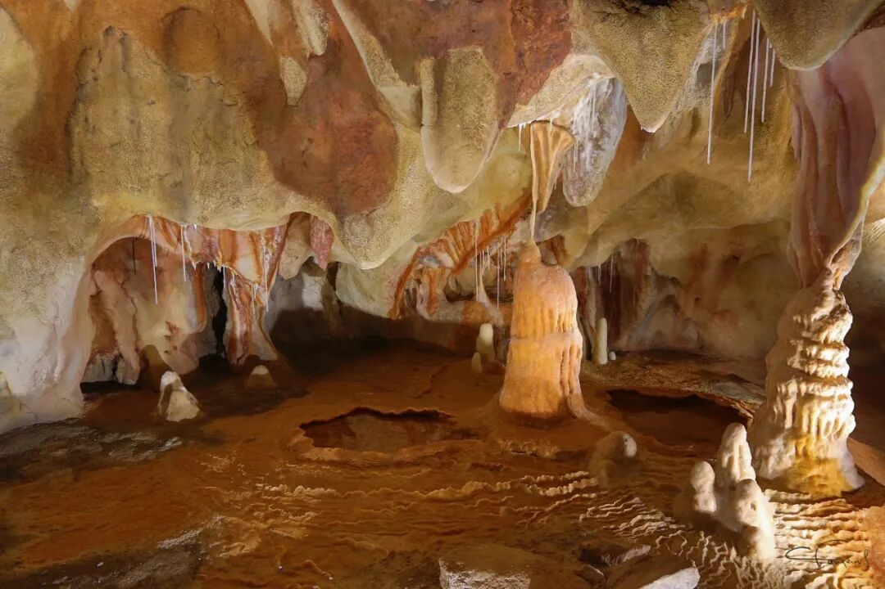
©C. Fougeirol/Auvergne-Rhône-Alpes Tourisme
位于瓦隆蓬达尔克 (Vallon-Pont-d'Arc) 镇附近的肖维岩洞穴 Grotte Chauvet 在1994年发现了距今大约2万年前的史前壁画，被认为是当今最杰出、最具历史意义的史前绘画遗址。
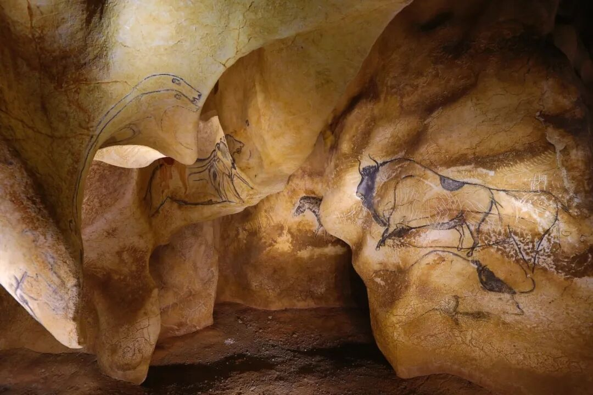
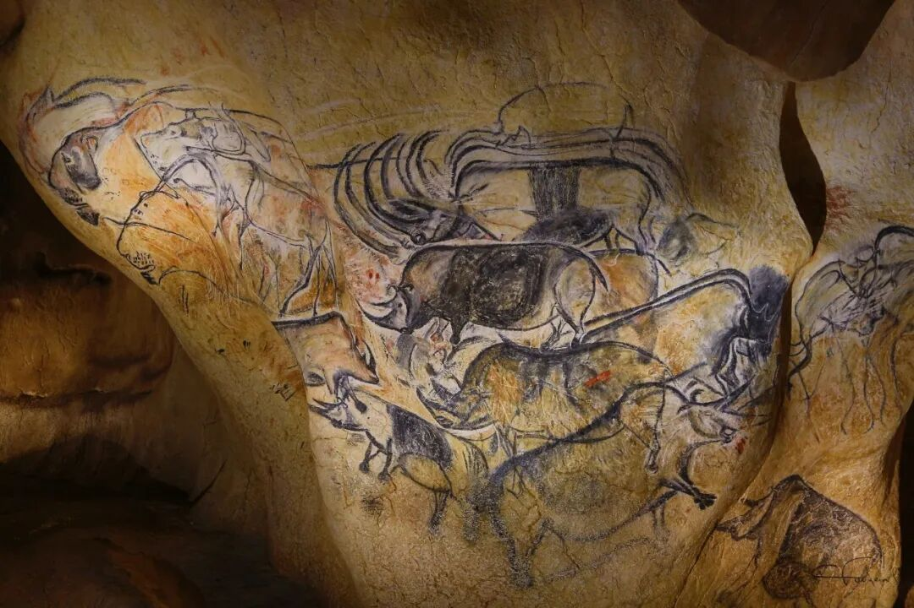
©C. Fougeirol/Auvergne-Rhône-Alpes Tourisme
2014 年起被联合国教科文组织列为世界遗产，岩洞面积8000平方米，洞长约500米，岩壁上生动形象地描绘了上千幅动物壁画，使用红赭石和木炭等黑色颜料绘制，优雅流畅的线条在明暗交织的洞穴中尤为壮观震撼，又被认为是"人类第一个伟大杰作"。
35万年前的文明
奥尔涅克水洞
Aven d’Orgnac
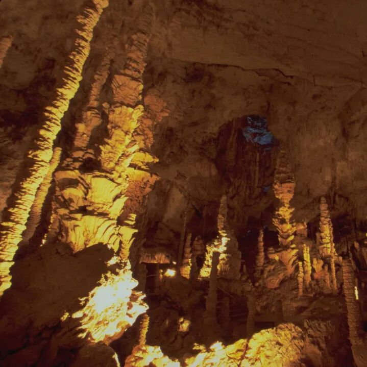
©JL. Rigaux/Auvergne-Rhône-Alpes Tourisme
这是欧洲最大的洞穴之一，也是17处“法兰西大遗迹” (Grand site de France) 中唯一的地下古迹。承载着人类35万年前的文明历史，这些奇形怪状的钟乳石直到1935年才被人类发现，如今人们可以沿着一条720级阶梯深入地下120米去探寻这处隐秘角落。
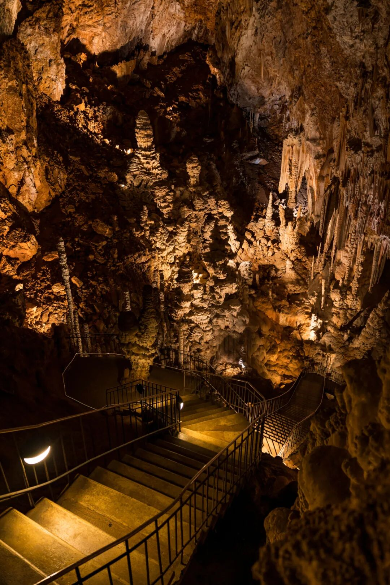
©iStock-Ludwig Deguffroy
穿越时空的记忆
130年前的蒸汽火车
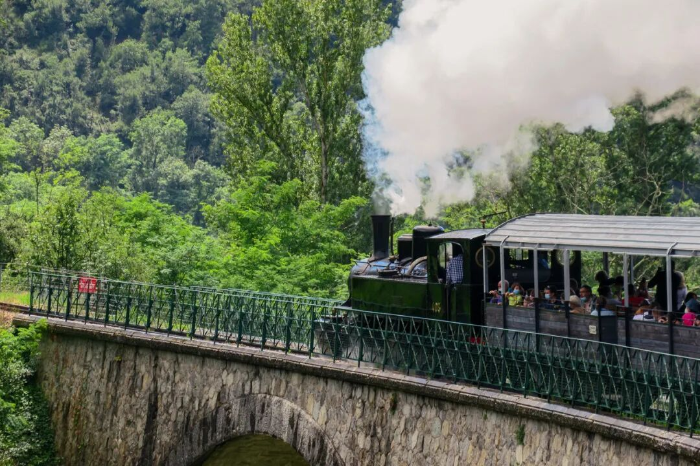
©LesZed.com
这条始于1891年“马斯特鲁号” Mastrou 的蒸汽火车线路连着从拉马斯特尔 (Lamastre) 到图尔农-圣让 (Tournon-Saint-Jean) 之间的无限乡村风光，全长28公里，穿越桥梁、高架桥和隧道，透过车窗还能欣赏杜克斯峡谷 (Gorges du Doux) 和阿尔代什高原 (Plateau Ardéchois) 的美景。
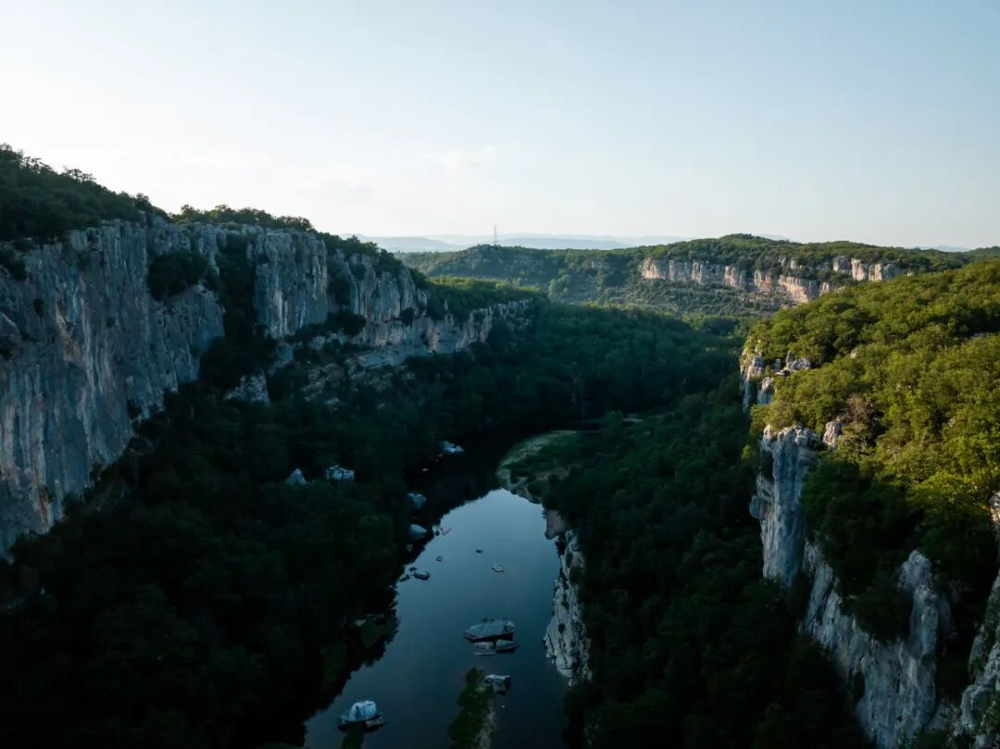
©iStock-Bastien Chilloux
伴着汽笛声和袅袅升起的蒸汽，
仿佛穿越到了最初的工业革命时代。
怪石迷宫
派奥利夫石林
Bois de Païolive
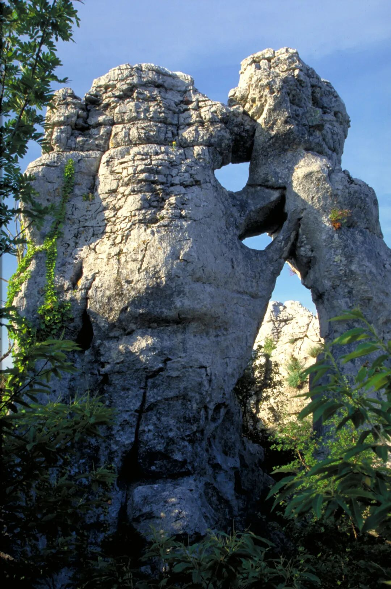
©JL. Rigaux/Auvergne-Rhône-Alpes Tourisme
这片古老的石林位于阿尔代什省南部，靠近莱万斯Les Vans小镇附近，这里的石灰岩山丘大约形成于 1.5 亿年前的侏罗纪时期，这些自然侵蚀地貌早就的形状恰似一个个憨态可掬的动物，只要你想象力够丰富，怒吼的狮子、俏皮的猴子、大象，熊……都能看到。
逛完浑然天成的童话石林
可以在莱万斯 Les Vans 小镇歇脚，
灯火缭绕的夜市总是能淘到新奇有趣的好物。
↓
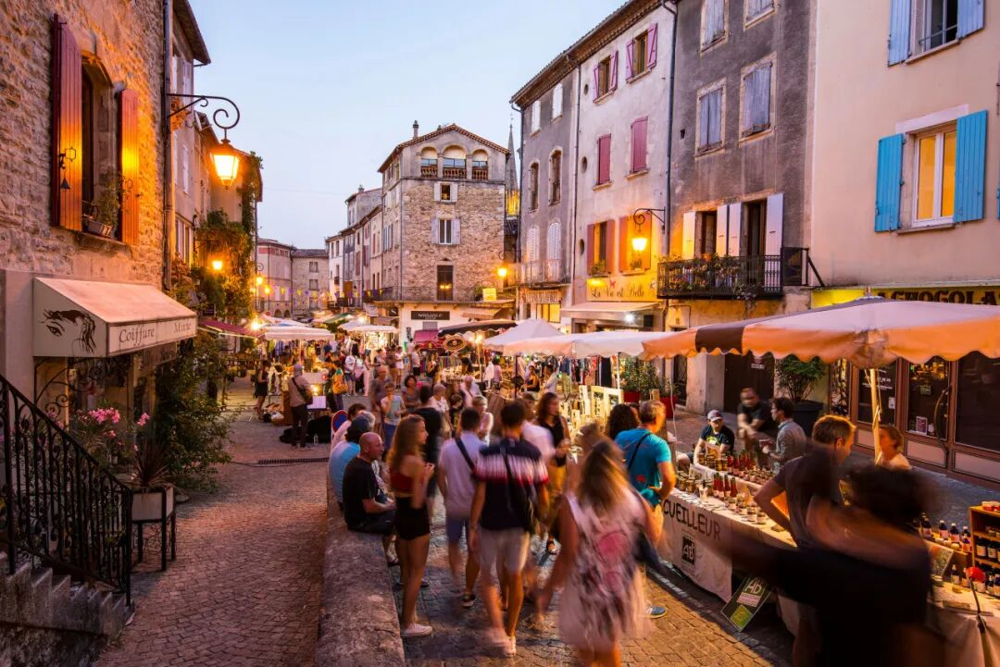
©M. Dupont/Auvergne-Rhône-Alpes Tourisme
飞出了世界上第一只热气球
阿诺奈
Annonay
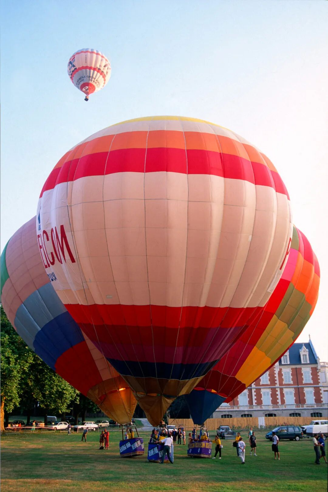
©P. Fournier/Auvergne-Rhône-Alpes Tourisme
人类想飞上天和太阳并肩的梦想在世界上第一只羊皮热气球从阿诺奈 (Annonay) 飞出时实现了，书写历史的功臣正是法国的蒙哥费尔 (Montgolfier) 兄弟，两人在1783年制作的羊皮热气球在阿诺奈小镇上空试飞成功，要知道这比飞机载人升空飞行还早了120年。
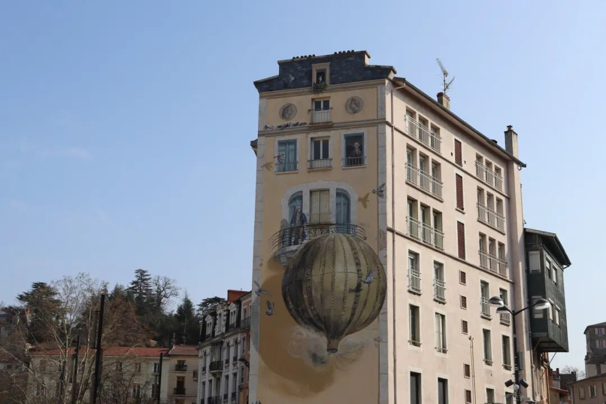
©iStock-Eric Bascol
随后在凡尔赛宫的花园里，当着路易十六的面，兄弟俩用羊，鸭子和公鸡搭乘热气球表演这个实验，并再次取得了成功，为了纪念二人的功绩，法语中的“热气球”便是他们的名字 Montgolfier。
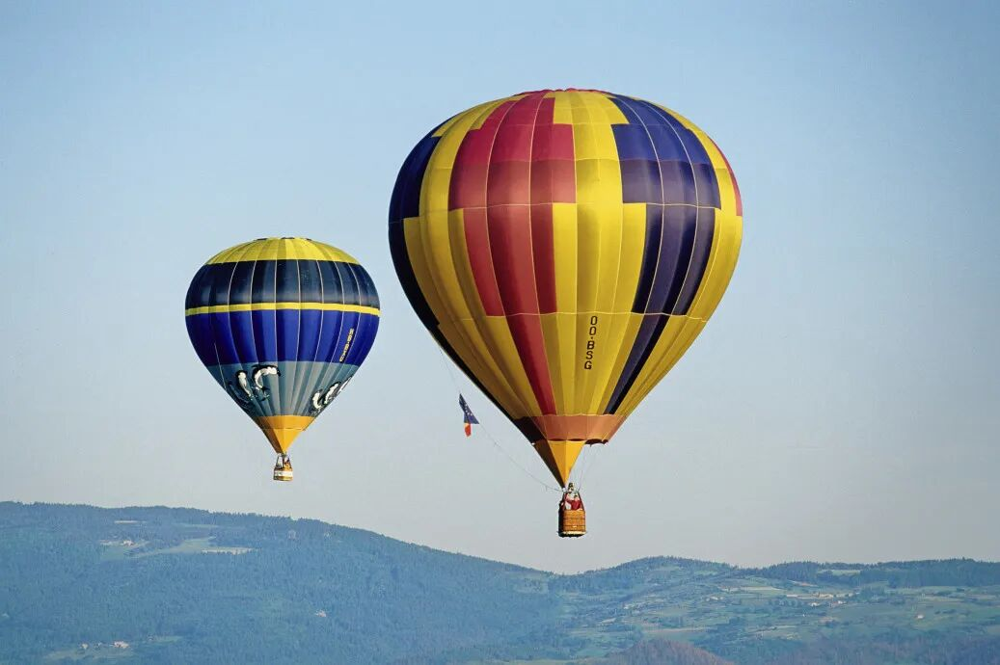
©P. Fournier/Auvergne-Rhône-Alpes Tourisme
从那以后，每年 6 月阿诺奈的广场上都会举行放飞庆典，所以来阿诺奈一定要试试搭乘热气球，意义非凡。
克鲁索尔城堡
Château de Crussol
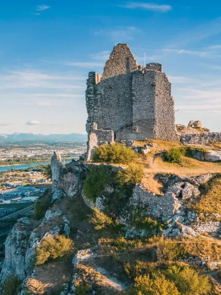
©iStock-Daniel Bartus
曾经统治着罗讷河谷的克鲁索尔城堡是一座建于12世纪早期的中世纪堡垒，如今只剩下外围的城墙，苍凉而悲壮的屹立在克鲁索尔山巅。
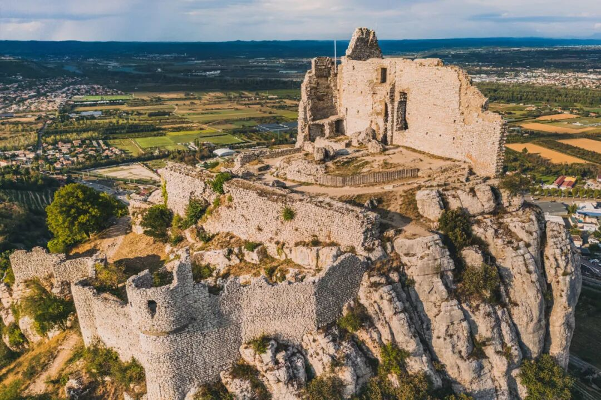
©iStock-Daniel Bartus
城堡遗址位于圣佩雷 (Saint-Péray) 小镇，是阿尔代什地区 18 处历史遗产之一，尽管已经过去了数个世纪，人们依旧能从残垣断壁中感受到岁月沧桑和历史的深远。
数一数诱人特产
栗子节
Les Castagnades
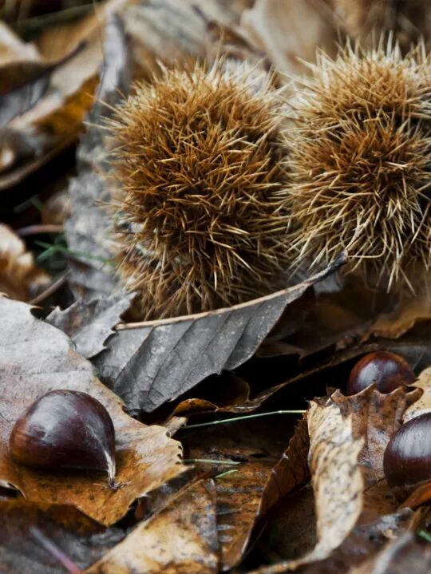
©iStock-legna69
每年10月到11月，阿尔代什山区 (Monts d'Ardèche) 村庄里都会迎来一年一度的栗子节 Les Castagnades 庆典，秋天正是吃栗子的时节，可以在集市上买到烤得喷香的板栗，餐馆也会上新栗子菜单：栗子酱、栗子鸡、栗子脆饼，栗子蛋糕等等，法国人对美食的真挚在阿尔代什的餐桌上就是五花八门的栗子宴。
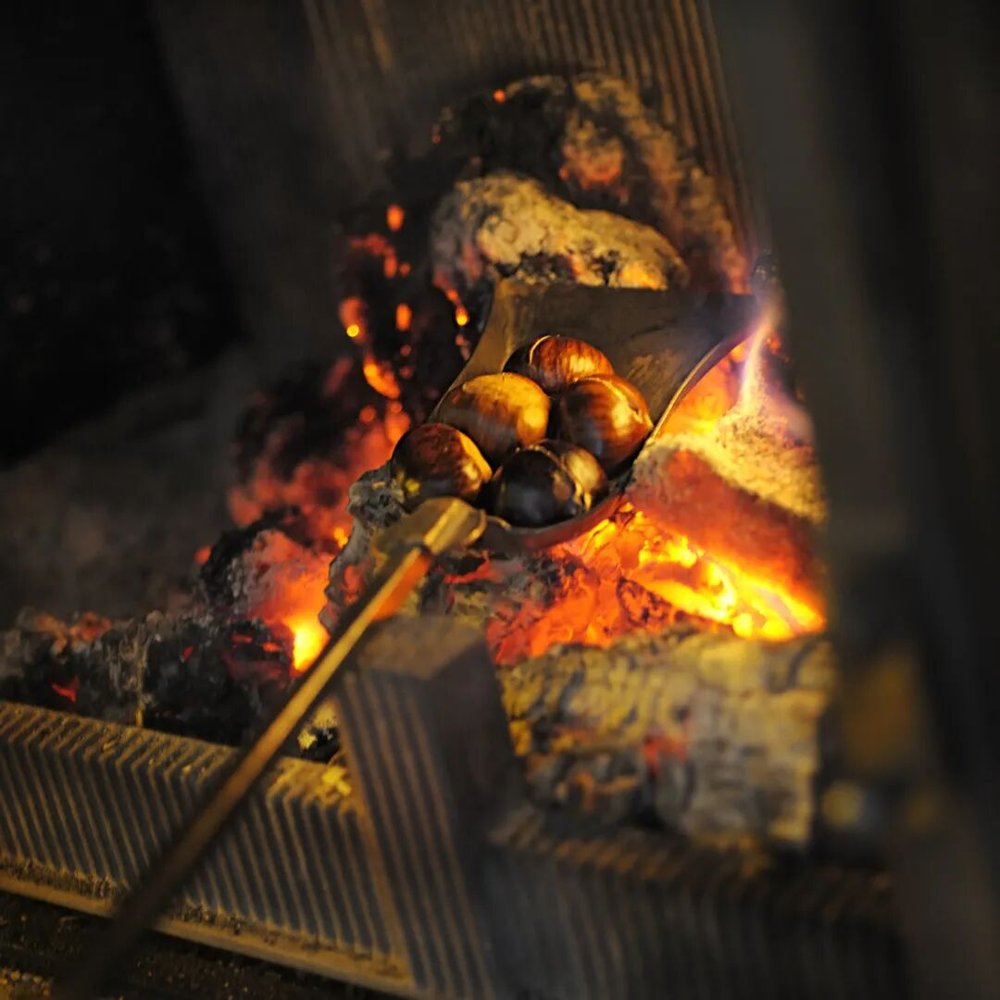
©iStock-RolfSt
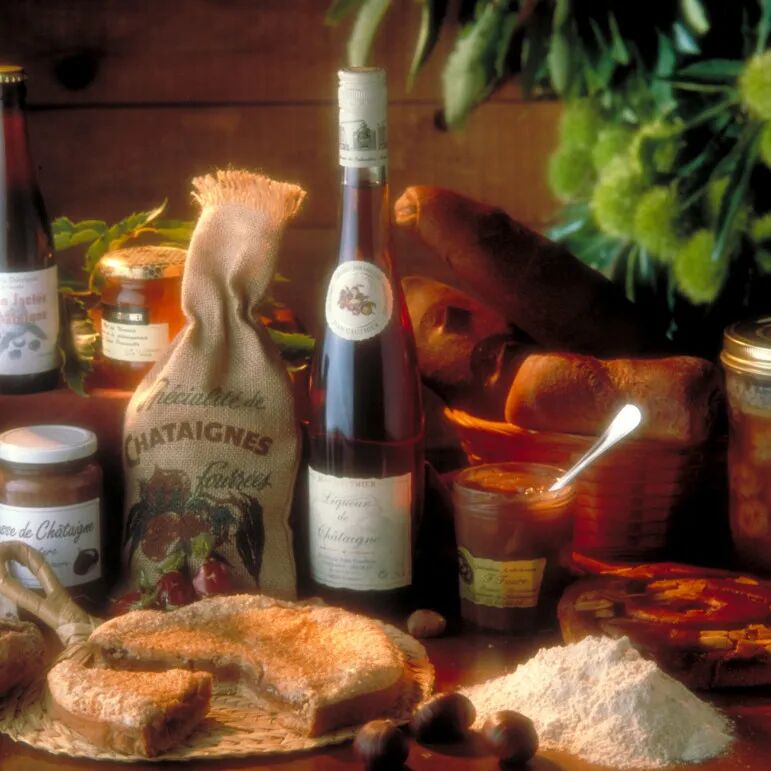
©C. Fougeirol/Auvergne-Rhône-Alpes Tourisme
梅森克牛肉
Le Fin Gras du Mézenc
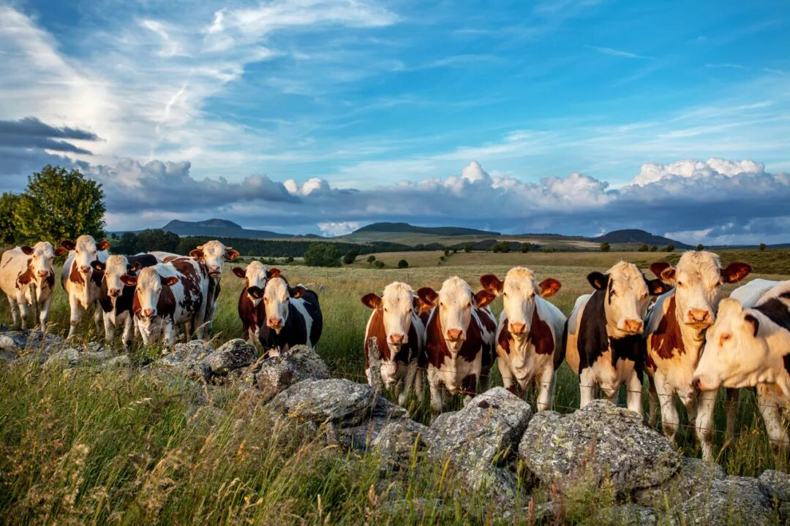
©D. Frobert/Auvergne-Rhône-Alpes Tourisme
阿尔代什的另一大特色美食当属珍贵且产量稀少，拥有原产地命名 AOP 保护的梅森克牛肉 (Le Fin Gras du Mézenc)，产区位于法国奥弗涅大区梅森克高原 (Plateau du Mézenc)，主要集中在阿尔代什省和上卢瓦尔省内海拔 1,100 米的牧场培育饲养。
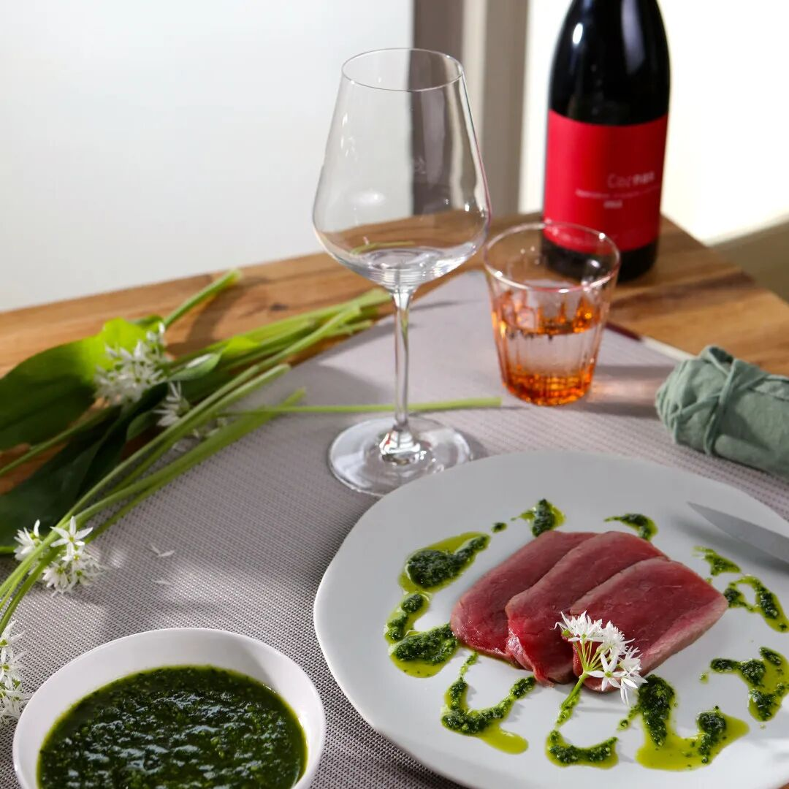
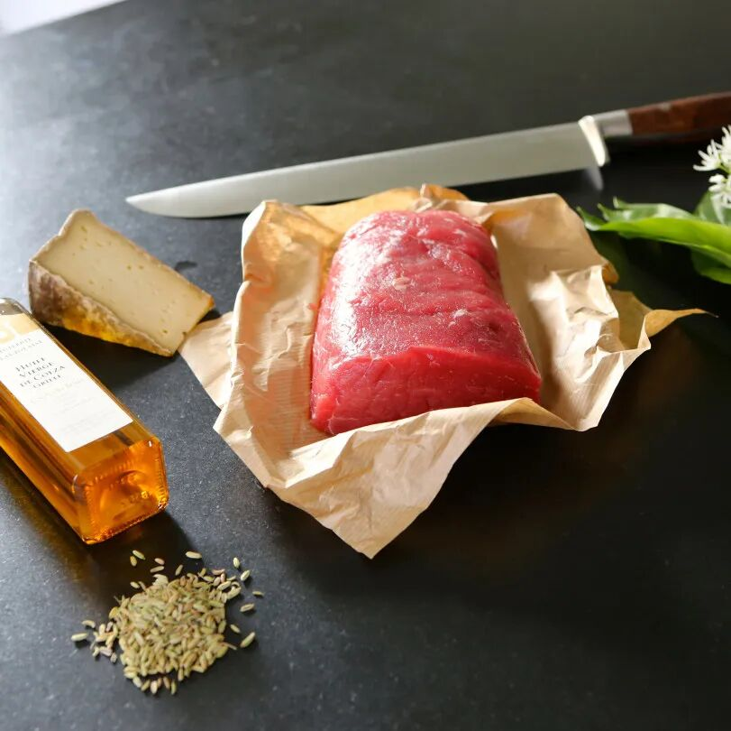
©Beegoo/Auvergne-Rhône-Alpes Tourisme
↑
吃着山区富含优质长纤维干草长大的牛，
肉质细嫩且脂肪含量极低，
这种上乘的食材需要用慢火耐心烹饪。
阿尔代什野生蓝莓
La myrtille sauvage d'Ardèche
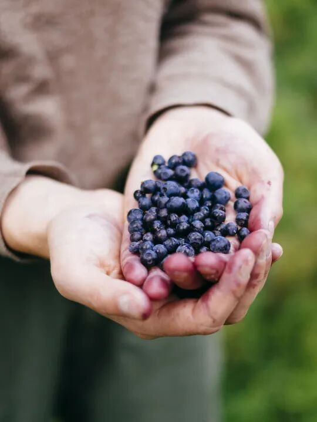
©iStock-Ivar Østby Simonsen
营养价值极高的野生蓝莓，主要产区集中在阿尔代什山区和塞文山脉，海拔 600 米以上的灌木丛中。从七月底开始采摘，可以去佩雷雷斯 (Péreyres) 或梅齐尔哈克 (Mézilhac) 的集市买到新鲜的蓝莓，拌上酸奶或做成水果色拉，健康又美味。
皮科多奶酪
Picodon
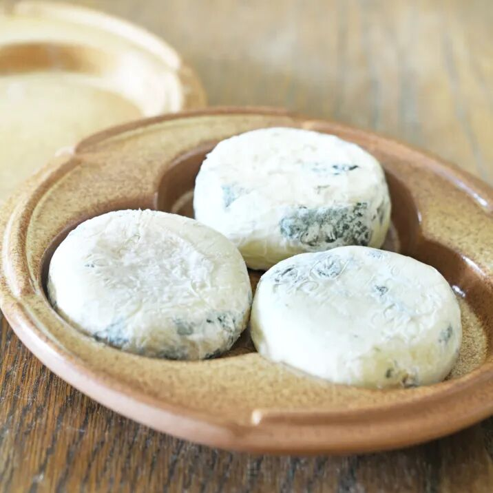
©iStock-jeangill
这种扁圆形的山羊奶酪是阿尔代什的特产，名字来源于普罗旺斯语中的 “Picaoudou” 也就是带有辛辣味的奶酪，地道美味的吃法是配上桃红葡萄酒和橄榄葡萄等作为餐前的开胃菜享用，吃上去带有淡淡的辛香味，最适合初次品尝法式奶酪的新手。
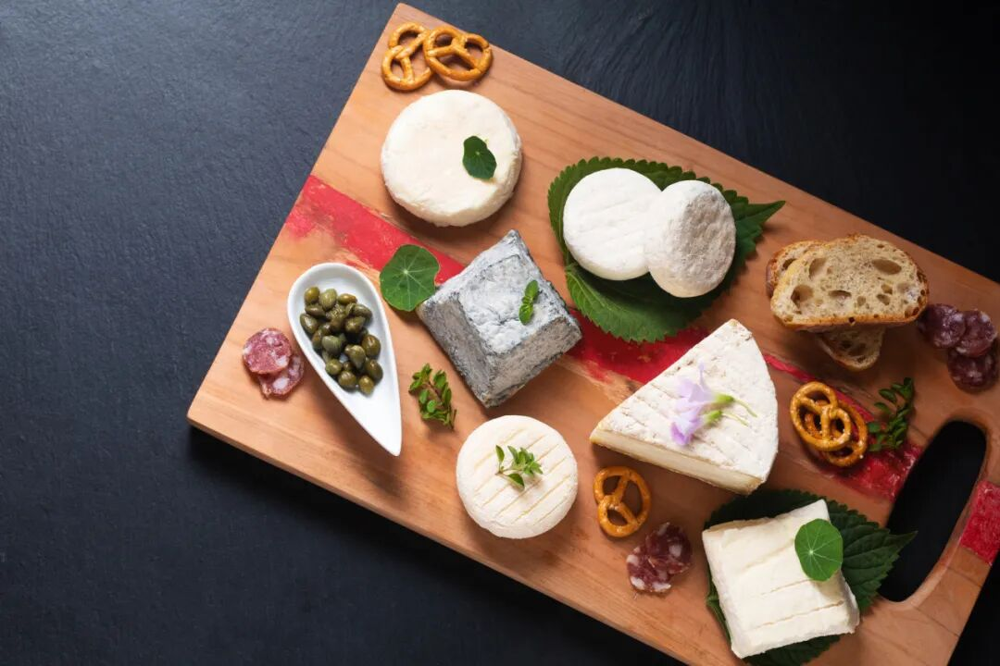
©iStock-buddyb76
来阿尔代什该逛哪儿，
该吃啥这会心里都有谱儿了吧~


法小旅的官网有更多精彩消息